Настоящие кадры Godot 4.7.2, AMD Radeon RX 580, 05.11.2026. Полные изображения открываются по нажатию. WebP сжат без потерь; декодированные пиксели совпадают с исходным PNG.
Внутри показан штатный срез стен и скрытая кровля. Сцена обоза подготовлена управляемо: серверный торговец, лошадь, телега, реальная дорога и стоянка; самостоятельное движение двух обозов проверено отдельно интеграционным тестом. Изображения не дорисовывались.
Жаркий климат, seed 11. План: square; формы домов: crosswing (2 эт.), wing (2 эт.). Параметры и SHA-256 исходников.
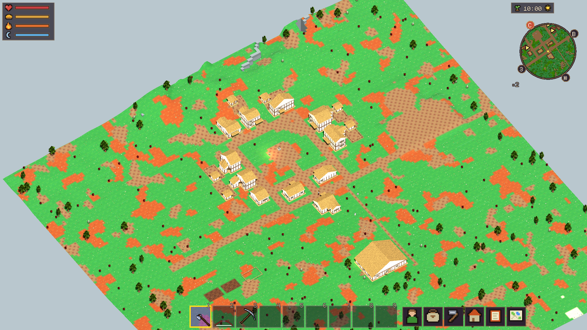
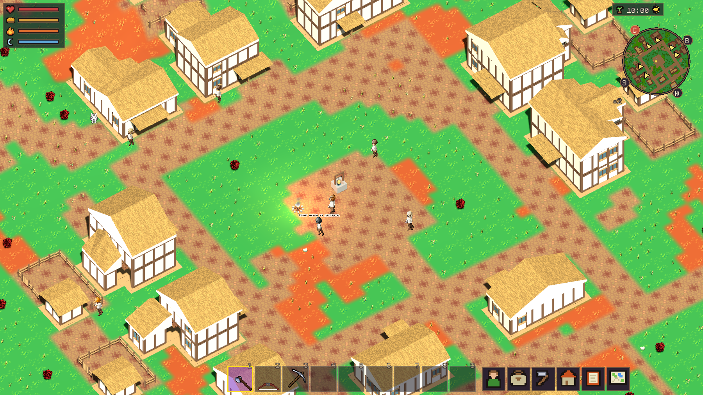
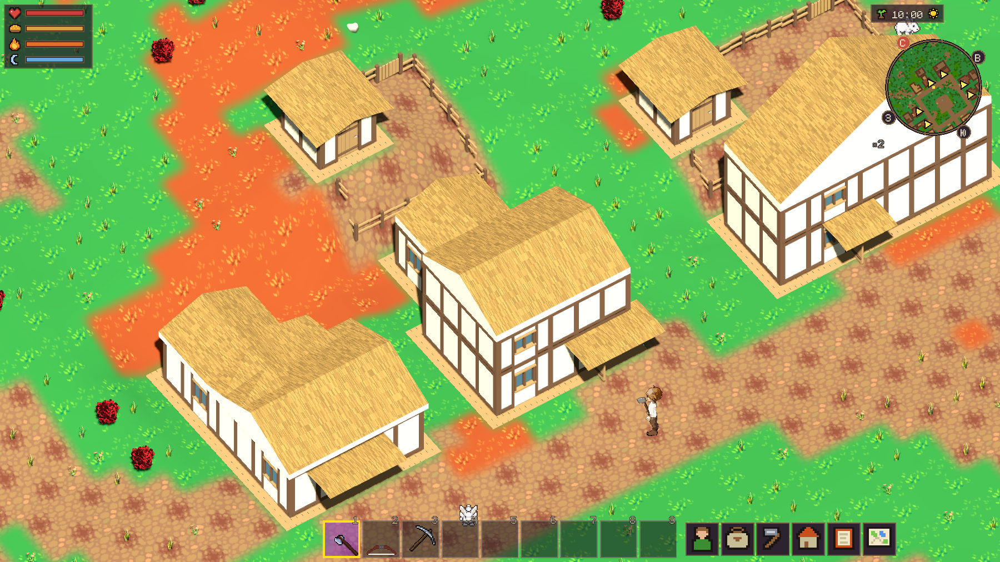
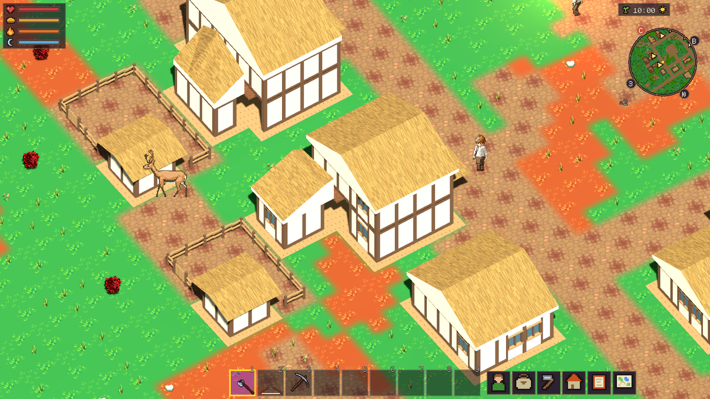
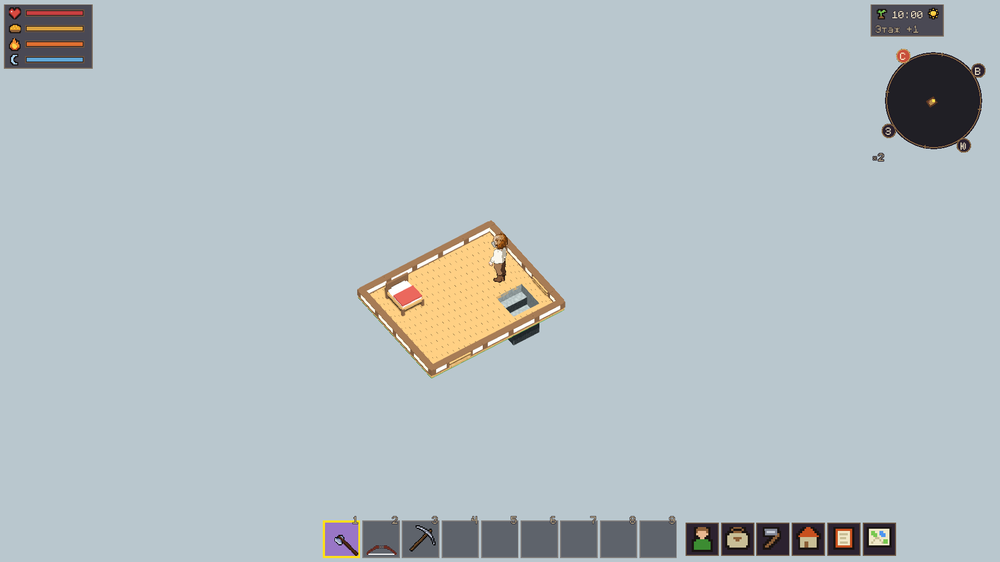
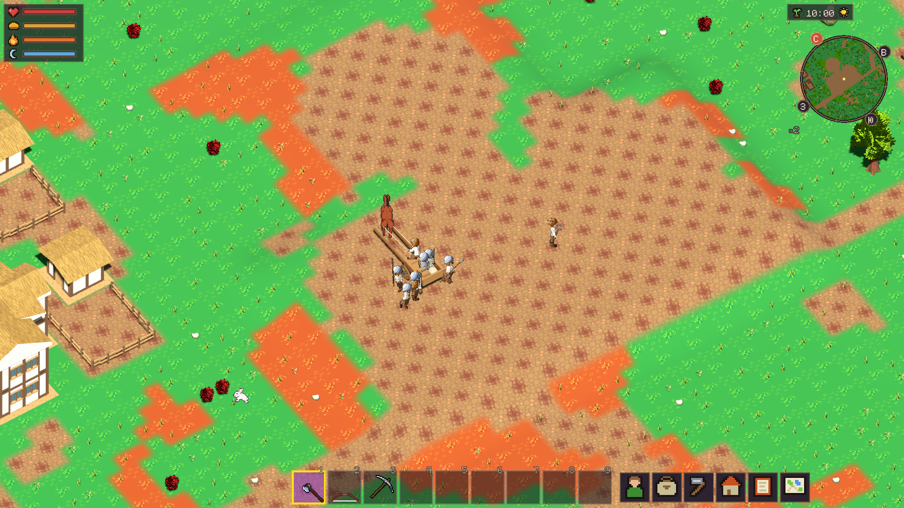
Холодный климат, seed 7. План: crossroads; формы домов: cottage (2 эт.), wing (1 эт.). Параметры и SHA-256 исходников.
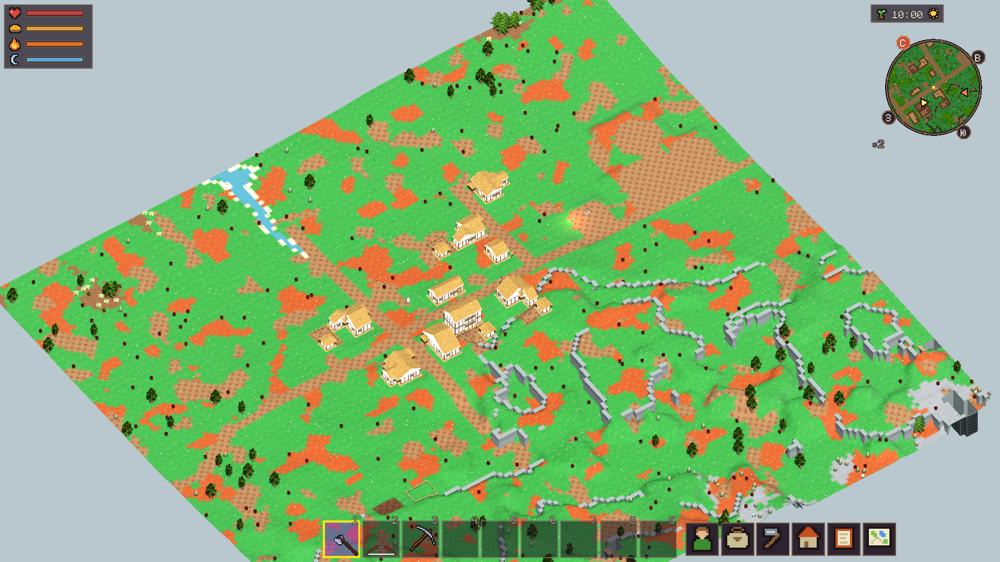
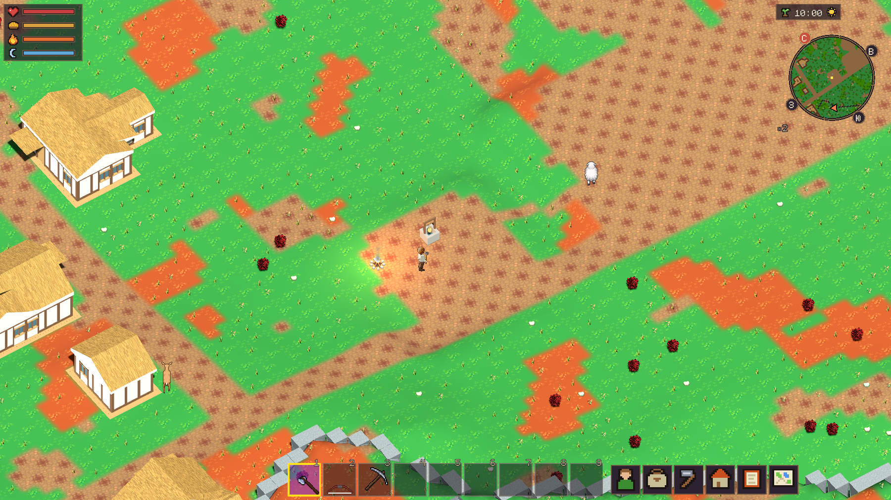
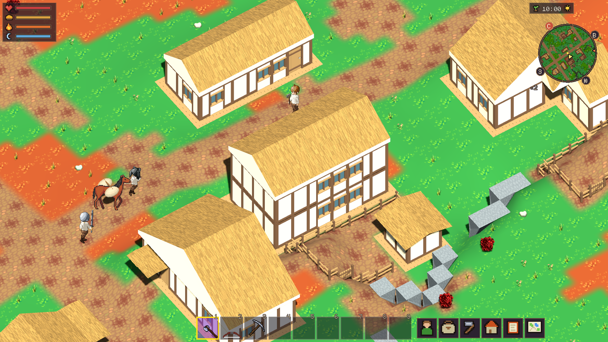
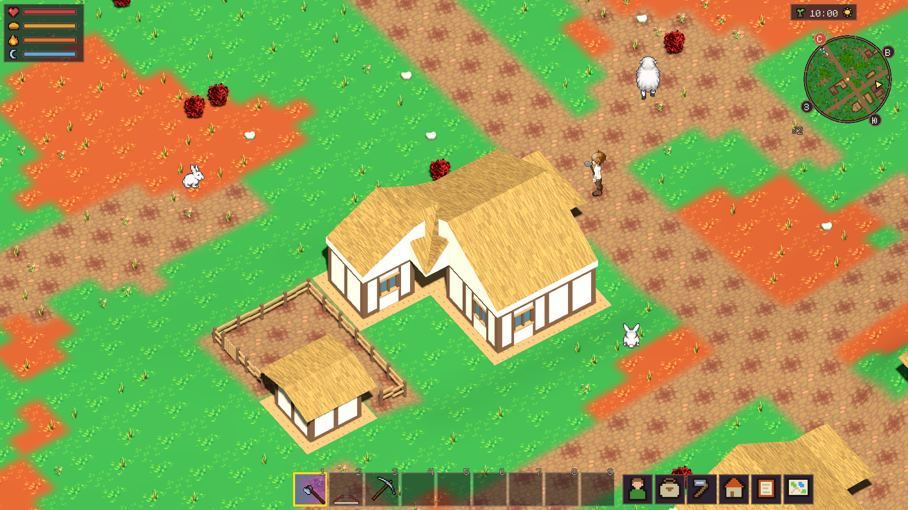
Умеренный климат, seed 431. План: bend; формы домов: wing (2 эт.), hall (2 эт.). Параметры и SHA-256 исходников.
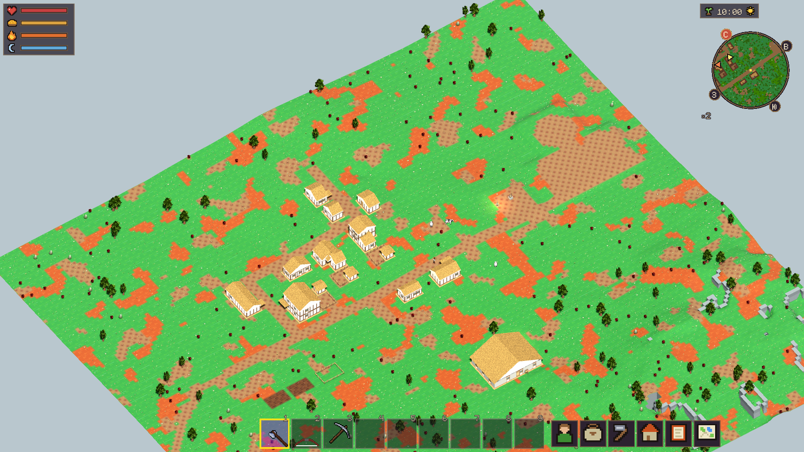
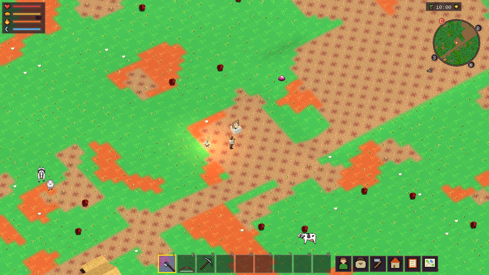
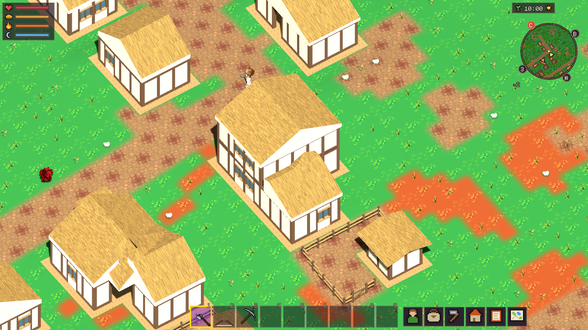
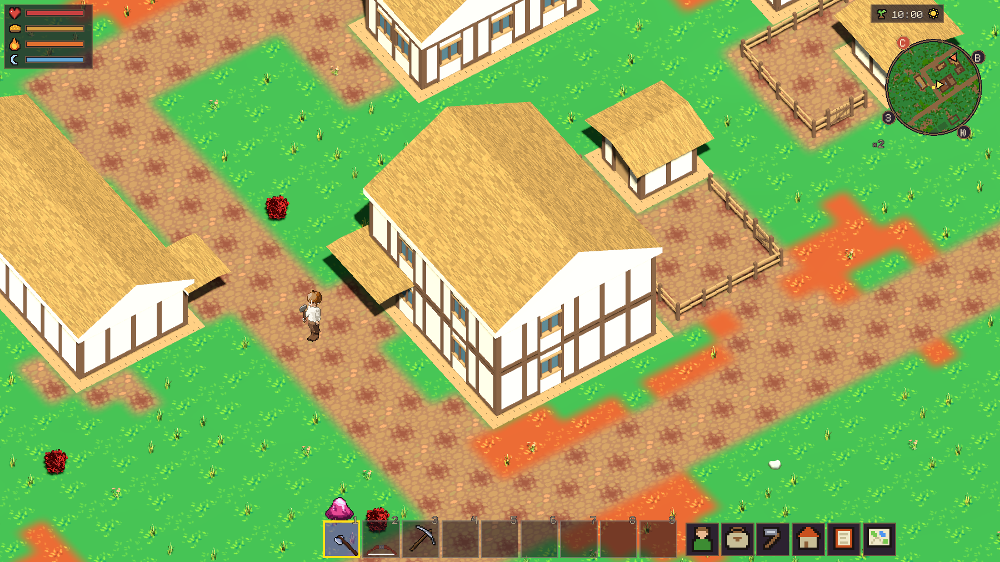